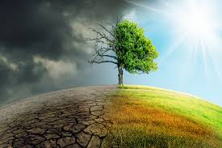

MARCH 24 2021
What is Climate Change?
Climate change is defined as shifts in the earth’s climate driven by human activities, mainly greenhouse gas emissions caused by burning fossil fuels
Global temperatures are slated to rise by at least 1.5 degrees Celsius by 2030, but we are already living the devastating impacts of global warming.
As the planet warms, extreme weather events such as heatwaves, floods, and droughts become more frequent and intense.
Unfortunately, those who have contributed the least to climate change are affected the most. Without immediate action, the climate crisis could lead to widespread poverty, hunger and migration.